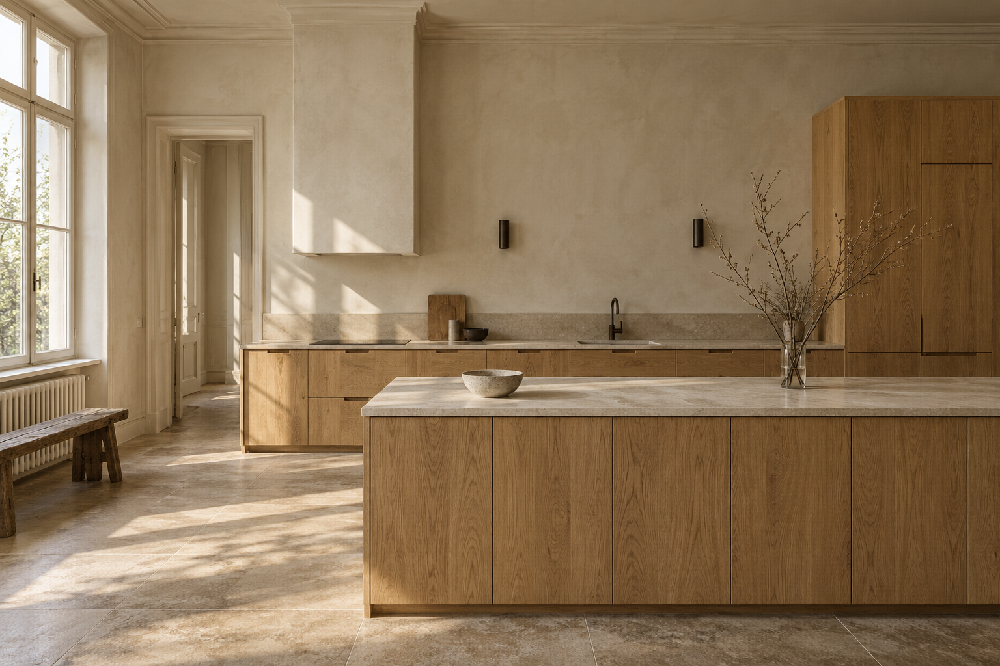

Independent ideas / Three digital places
Different worlds.
One considered approach.
 01 / RETAIL
01 / RETAILFORME
Objects for slower living.
A considered-living shop with quiet forms, tactile textures and an editorial eye.

02 / CRAFTKERN
Spaces shaped by hand.
A Berlin joinery concept where material, precision and everyday life meet.
 03 / HOSPITALITY
03 / HOSPITALITYLUMA
A table for the season.
An intimate restaurant concept built around good food and unhurried evenings.
These are fictional portfolio concepts. All products, prices, services, menus and business details are demonstration content.
Try the local demo bag, estimate enquiry or reservation.
Each interaction stays in your browser.